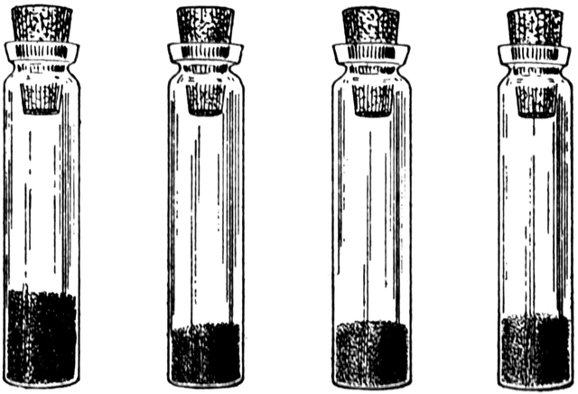

A minimalist composable component inspired by React.
GOALS
- Less than a minute or two to grock the whole codebase, ~100 lines.
- Preact/React style component composition.
- One-way binding. Pipeline data though connected components.
- Single source event dispatch. No event rebinding needed.
- Routing agnostic (not all UIs are intended to run in a browser).
- Server and client side rendering.
NON-GOALS
- Re-rendering performance. The "vdom everywhere" approach makes code easy to reason about at a high level, but ends up being a compromise when performance is actually important. In this case I prefer to target exact nodes and manage updates manually.
- JSX
- Magic
USAGE
Install using npm, yarn, etc.
npm install hxoht/tonic
Import the component constructor.
const Tonic = require('tonic')
Create a class that extends Tonic.
class Box extends Tonic {
//
// You can listen to any valid dom event by creating a method
// with the corresponding name. The method will receive the
// event object.
//
mouseover (e) {
const r = Math.random().toString(16).slice(2, 8)
e.target.style.backgroundColor = r
}
mouseout (e) {
e.target.style.backgroundColor = 'fff'
}
//
// Render must return one root element (which can contain as
// many elements as you want). The root must have ${this.id}
// if you want to listen to dom or lifecycle events.
//
render (props) {
return `
Box (${props.n})
`
}
}
const box = new Box()
Create a main component that will contain the box component.
class BoxContainer extends Tonic {
//
// A constructor is not required.
//
constructor (props) {
super(props)
//
// This is also optional, for demonstration purposes.
//
this.style = `
border: 1px solid blue;
height: 200px;
width: 200px;
`
}
//
// The mount event is fired once the root element is attached
// to the dom.
//
mount (el) {
console.log('mounted!')
}
click (e) {
//
// Set state on a component instance or on this instance,
// ie, this.setProps(...) will re-render all child components.
//
box.setProps({ n: Math.random().toString(16).slice(2, 4) })
}
//
// Calling the render method of a component will return its
// html.
//
render (props) {
return `
Container ${box.render(props)}
`
}
}
CLIENT SIDE RENDERING
The root component can be attached to any node.
const container = new BoxContainer({ n: 100 })
container.attach(document.body)
SERVER SIDE RENDERING
The render method returns a string.
http.createServer((req, res) => {
const container = new BoxContainer({ n: 100 })
res.end(container.render())
})
EXTENDING
The following built-in methods are static and can be overridden by assigning new functions to the property name.
Tonic.html
A tagged template function that will tidy the html returned by the render function.
Tonic.clean
A sanitation function that uses he to escape strings found in object literals. This helps prevent XSS.
▫
View on Github